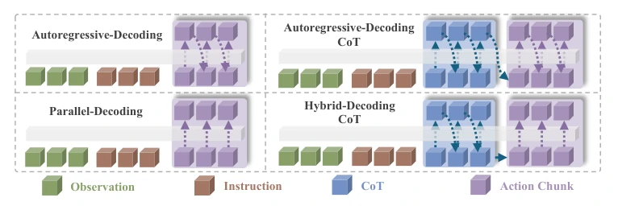
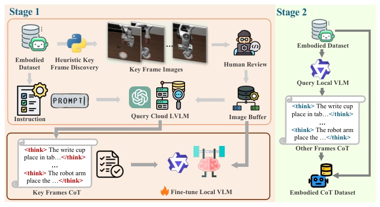
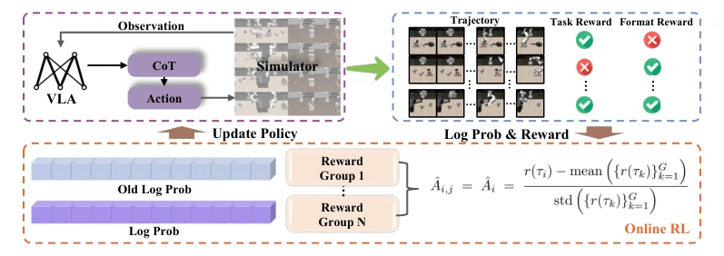
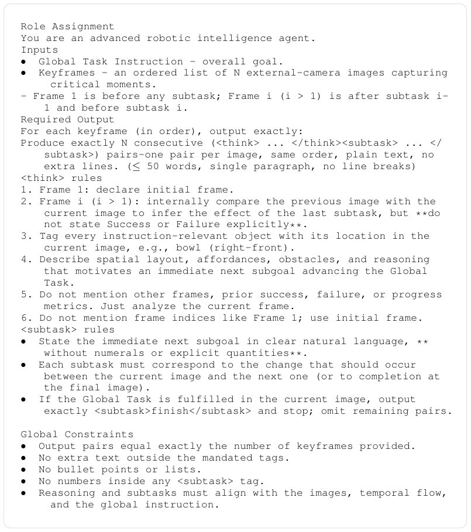
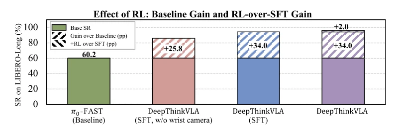
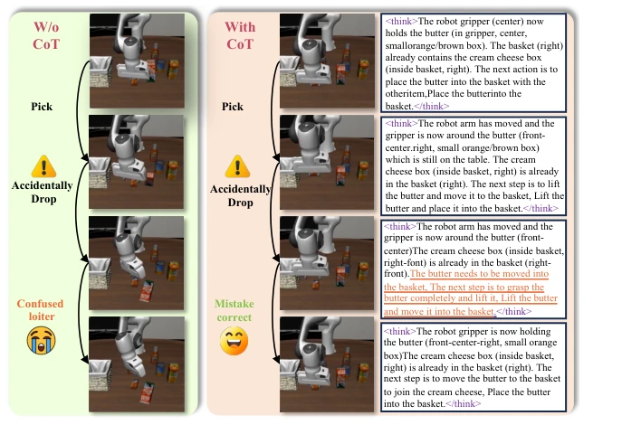

Finally, someone dares to ask whether 'robot thinking is just pretending.' The authors did not rush to stack models but first performed an autopsy on CoT, discovering that forcing an autoregressive decoder to generate language and actions simultaneously is simply a 'suicidal operation,' causing performance to drop directly by 4.2 points. More critically, CoT learned solely via SFT is indistinguishable from no thinking in out-of-distribution scenarios; only with RL reward alignment does CoT transform from 'nonsense literature' to 'effective planning.' DeepThinkVLA uses hybrid attention mechanisms and two-stage training to forcibly integrate these two aspects, achieving 97% on LIBERO, which is indeed impressive. However, relying on cloud large models to generate CoT data incurs significant costs; although real-world experiments were conducted, the sample size is too small, suggesting a distance remains from general-purpose robots, but at least it proves that 'thinking clearly before acting' is not metaphysics.
研究动机Motivation
现有的 VLA 模型大多是反应式的 System-1 策略，直接映射感知到动作，泛化性差 (Ma et al., 2024; Liu et al., 2025b)。引入 CoT 本意是让它“三思而后行”，但现有工作 (Zawalski et al., 2024; Lin et al., 2025) 效果参差不齐，甚至被质疑只是增加了延迟的装饰性文本。作者发现现有研究缺乏对 CoT 何时有效的严谨诊断。核心问题在于：CoT 往往只是模仿专家标注风格，并未真正因果关联任务成功，导致在分布外 (OOD) 条件下失效 (SFT-only 模型性能下降 32.0 pp，与无推理基线无异)。因此，亟需解决 CoT 如何真正参与决策而非仅仅生成文本的问题。
Existing VLA models are mostly reactive System-1 strategies, directly mapping perception to action, with poor generalization (Ma et al., 2024; Liu et al., 2025b). The original intention of introducing CoT was to make it 'think before acting,' but existing work (Zawalski et al., 2024; Lin et al., 2025) shows mixed results, even questioned as decorative text that only adds latency. The authors found that existing research lacks rigorous diagnosis of when CoT is effective. The core problem lies in: CoT often merely mimics expert annotation styles, without truly causally linking task success, leading to failure under out-of-distribution (OOD) conditions (SFT-only model performance drops 32.0 pp, indistinguishable from no-reasoning baselines). Therefore, it is urgent to solve the problem of how CoT truly participates in decision-making rather than merely generating text.
Overall adopts a 'Data Construction - Architecture Design - Training Strategy' three-in-one scheme. First, construct embodied CoT dataset: extract keyframes through gripper state changes, use cloud LVLM to generate keyframe CoT, then fine-tune local VLM to annotate intermediate frames (Fig. 2). Second, design hybrid attention decoder (Fig. 1): language reasoning uses causal attention (autoregressive), action generation uses bidirectional attention (parallel decoding), solving modality mismatch and reducing latency. Finally, two-stage training: SFT cold start learns basic reasoning, then optimized using result-based RL (GRPO style), aligning reasoning chain with action causality through sparse task success rewards (Fig. 3). This design ensures CoT is not merely text, but a planning signal influencing actions. Additionally, the RL stage adopts a grouped credit assignment strategy, propagating sparse rewards to each token, preventing catastrophic forgetting (Fig. 4 shows data construction prompts).

Figure 1: Comparison of VLA architectures. DeepThinkVLA introduces a hybrid design that pairs autoregressive CoT reasoning with parallel action decoding.

Figure 2: Two-stage pipeline for embodied CoT dataset construction. Stage 1 extracts keyframes via gripper state changes and queries a cloud LVLM; Stage 2 fine-tunes a local VLM on the keyframe CoT to annotate intermediate frames.

Figure 3: RL stage with grouped credit assignment. Trajectories are collected via simulator rollouts; rewards are group-normalized into token-level advantages and optimized with a clipped surrogate objective and KL regularization.

Figure 4: Prompt for keyframe CoT annotation via a cloud LVLM. The prompt elicits per-frame spatial scene descriptions and temporal subtask decompositions.
On three benchmark tests: LIBERO, LIBERO-Plus, and RoboTwin 2.0. Baselines include π0, OpenVLA, etc. DeepThinkVLA achieves 97.0% success rate on LIBERO, 79.0% robustness on LIBERO-Plus, 59.3% on RoboTwin 2.0, all significantly better than π0-FAST. Ablation experiments prove: hybrid decoding is superior to pure autoregressive (performance improvement), RL stage is crucial (SFT fails under OOD, recovers after RL). Fig. 5 shows RL significantly improves long horizon tasks, Fig. 6 demonstrates CoT-assisted error recovery capability. Additionally, transferability was verified on AGILEX ALOHA real robot, although samples are limited, it confirms the method's effectiveness.

Figure 5: Effect of RL on LIBERO-Long. Solid bars share the π0-FAST baseline (60.2%); shaded segments show gains from architecture and RL. The teal segment marks the +2 pp RL improvement over SFT-only.

Figure 6: “Think before acting” enables error recovery. Left: the baseline enters a repetitive failure loop after a missed grasp. Right: DeepThinkVLA re-articulates the subgoal via CoT and recovers.